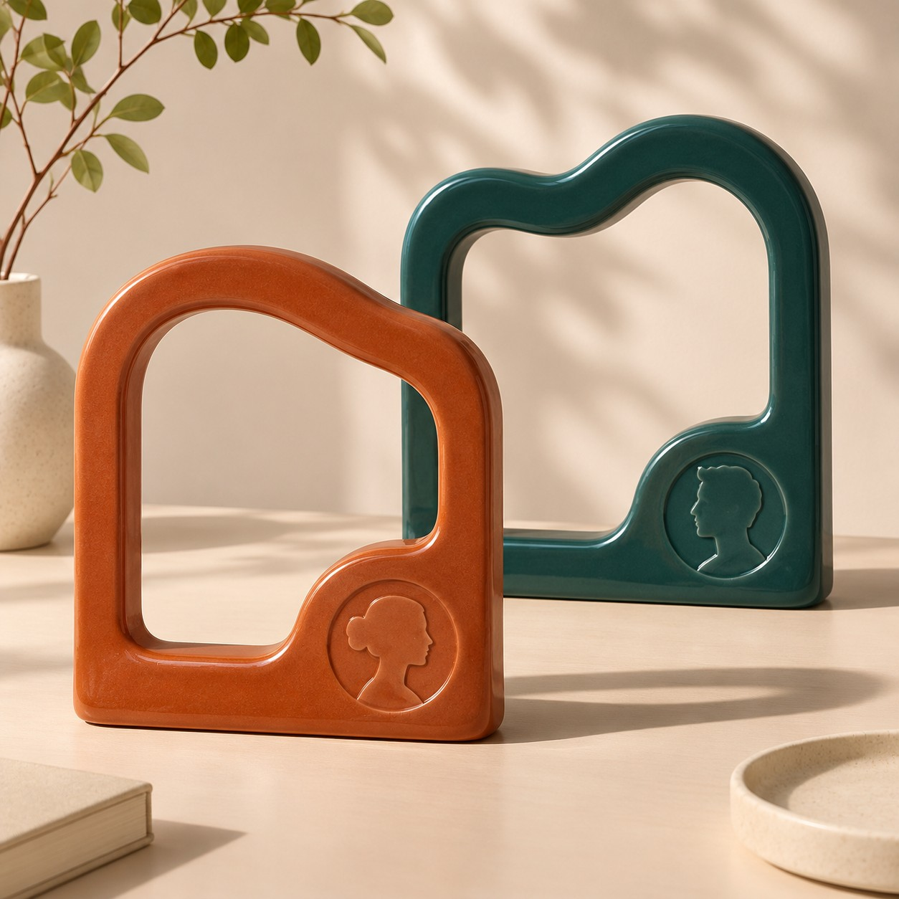

This project is archived.
To use multiple Claude Desktop accounts on Windows, we recommend Claude Profile Switcher by Piwqust.
Visit Claude Profile Switcher
To use multiple Claude Desktop accounts on Windows, we recommend Claude Profile Switcher by Piwqust.
Visit Claude Profile Switcher